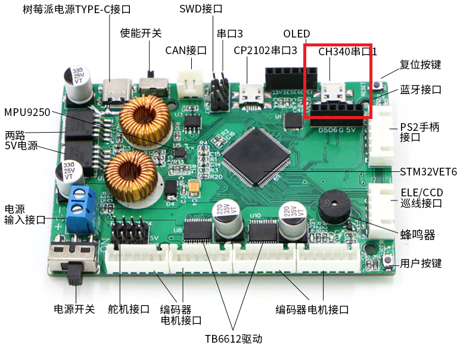
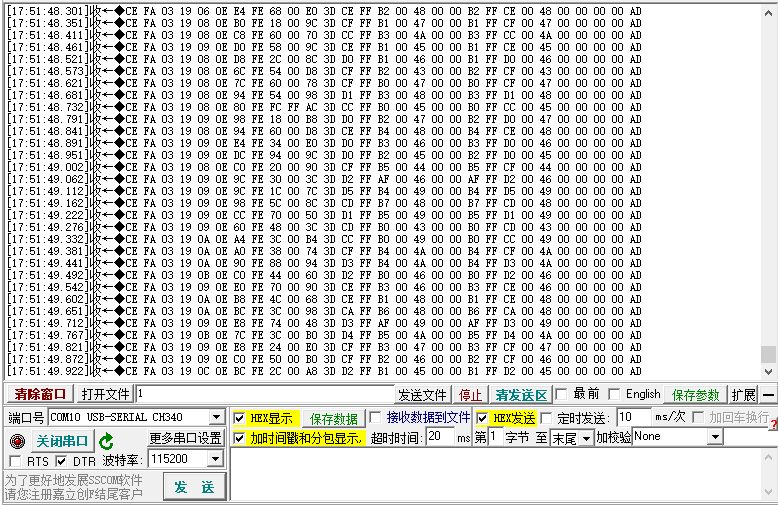
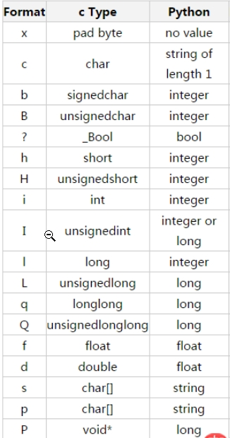

真车控制¶
本章我们来学习真车运动控制,我们首先找一根USB线,插入到PCB板上的串口1

然后我们打开串口调试工具,并且以16进制的形式显示数据,我们会看到小车下位机程序在源源不断的向PC端发送串口数据,接下来我们的任务就是来解析串口数据

我们提取其中一行数据来进行相应的分析:
CE FA 03 19 BB 0E 98 FE 1C 00 AC 3D CF FF B3 00 47 00 00 B3 FF CF 00 47 00 00 00 00 AD
大家会发现,前四个字节CE FA 03 19和末尾的一个字节AD 始终没有发生变化
这个里面其实就包含有数据协议的概念,我们大量的数据,我们该以怎样的一种形式去进行传输,先发送什么,后发送什么.这就是协议要考虑的事情.
为此,我们在下位机创建了这样的一个结构体,我们可以称之为协议
#define FLAG_HEAD0 0xce
#define FLAG_HEAD1 0xfa
#define FLAG_TAIL 0xad
#pragma pack(1)
struct TXProtocol{
uint8_t head0;
uint8_t head1;
uint8_t type;
uint8_t len;
short temperature;
short ax;
short ay;
short az;
short gx;
short gy;
short gz;
short mx;
short my;
short mz;
short velocity;
short angular;
uint8_t tail;
};
在这个协议中,我们要清除uint8_t它表示的是一个无符号的整数,长度为1字节.short 是有符号整数,它的长度是2字节.
而我们的数据在传输的过程中都是按照1字节进行传输的,那么整个协议结构体的字节长度为29个字节的长度
我们再回过头来看一下,我们在串口中收到的每一行数据
CE FA 03 19 BB 0E 98 FE 1C 00 AC 3D CF FF B3 00 47 00 00 B3 FF CF 00 47 00 00 00 00 AD
大家可以数一下确认一下上面这一串数的长度是否为29.
知道了这一点之后,搞明白这个数据长度之后,下面我们其实就可以来进行数据的解析啦!
解析协议¶
我们将上面这一组数继续拿过来
CE FA 03 19 BB 0E 98 FE 1C 00 AC 3D CF FF B3 00 47 00 00 B3 FF CF 00 47 00 00 00 00 AD
再把我们上面的结构体拿过来填充数据,仔细思考这里面我们要解决的问题:
struct TXProtocol{
uint8_t head0 = CE
uint8_t head1 = FA
uint8_t type = 03
uint8_t len = 19
short temperature = BB,0E
short ax = 98,FE
short ay = 1C,00
short az = AC,3D
short gx = CF,FF
short gy = B3,00
short gz = 47,00
short mx = 00,B3
short my = FF,CF
short mz = 00,47
short velocity = 00,00
short angular= 00,00
uint8_t tail = AD
};
通过上面的填数,大家应该不能看出,这里我们要进行处理的东西就是short类型的数据,short是两字节长度的整数,我们现在需要将两个字节的数据拼成一个整体,这个该怎么做呢?
这里需要用到计算机学科中的位运算,两个字节长度的数据,分为高8位,与低8位.我们只需要将高8位字节数据左移,然后用它加上低8位的数据即可拼成一个16位的数据.一个字节是8位,而short是两个字节,正好就是16位,通过这样的一种的方式,我们就可以将数据进行还原
这里我们给出,位运算公式:
高8位<<8|低8位
我们以上面温度数据BB,0E为例,BB是低8位数据,0E是高8位的数据
0x0E<<8|0xBB ====> 3771
这里显示的温度是经过放大100倍之后的数据,所以当前PCB板上测得的实际温度为37.71度
同理,我们也可以将short类型的数据3771,拆成两个字节
计算高八位的数据
3771>>8
计算低八位的数据
3771&0x00ff
使用struct模块进行解析¶
为了进行数据的收发,我们来学习一下python是如何处理C语言结构数据的. 这里有个比较重要的模块struct,它包含个我们常用的API:
- struct.pack(); 对数据进行打包 . 返回包装的结果
- struct.unpack(); 对数据进行拆包. 返回的是一个元组,即使只有一个数据也是元组
他们的工作原理其实是先将数据读取为字符串, 然后利用格式化的方式, 将数据转成python中的结构数据

下面我们给出short类型转换的示例代码:
低八位角标为0,高八位角标为1
temp = struct.unpack('h', bytearray([0xde ,0x0e]))[0]
print(temp)
print(0x0e<<8|0xde);
temp = bytearray(struct.pack('h',int(1.02*1000)));
print(temp)
python解析协议示例¶
这里我们需要用到串口模块serial,它包含两个常用的api:
read(字节数量)write(列表数据)
要使用它, 我们需要先导入serial模块
import serial
然后指定接口编号和波特率,构造它的实例:
ser = serial.Serial(port="COM25", baudrate=115200)
下面给出每次读1个字节的示例:
ser.read(1)
写的示例:
cmd = [0xce,0xfa,0x04]
ser.write(cmd)
如果是要解析我们上面的通讯协议,那需要考虑用多线程的方式不断的读取数据
# encoding: utf-8
import serial
import Queue
import threading
import struct
import time
ser = None
def do_imu(data):
temp = struct.unpack('h', bytearray(data[4:6]))[0]
print(data[4],data[5])
# acc
ax = struct.unpack('h', bytearray(data[6:8]))[0]
ay = struct.unpack('h', bytearray(data[8:10]))[0]
az = struct.unpack('h', bytearray(data[10:12]))[0]
# rot
gx = struct.unpack('h', bytearray(data[12:14]))[0]
gy = struct.unpack('h', bytearray(data[14:16]))[0]
gz = struct.unpack('h', bytearray(data[16:18]))[0]
# mag
mx = struct.unpack('h', bytearray(data[18:20]))[0]
my = struct.unpack('h', bytearray(data[20:22]))[0]
mz = struct.unpack('h', bytearray(data[22:24]))[0]
v = struct.unpack('h', bytearray(data[24:26]))[0]
w = struct.unpack('h', bytearray(data[26:28]))[0]
print("temp={} a=({}, {}, {}) g=({}, {}, {}) m=({}, {}, {}) v={} w={}".format(temp,ax, ay, az, gx, gy, gz, mx, my, mz,v,w))
def do_parse(d_type, d_len, d_data):
# 判断下位机发送过来的数据类型
if d_type == 0x03:
# 将头部信息插入进去封装成完整的消息帧
d_data.insert(0, d_len)
d_data.insert(0, d_type)
d_data.insert(0, 0xfa)
d_data.insert(0, 0xce)
do_imu(d_data)
elif d_type == 0x00:
pass;
def do_recv():
while True:
buff = recv_queue.get()
if buff is None:
break
buff = bytearray(buff)[0]
# 找到第一个头
if buff == 0xce:
# 找到第二个头
buff = recv_queue.get()
buff = bytearray(buff)[0]
if buff == 0xfa:
# 走到这一步,说明两个头都匹配成功了,可以继续判断类型了
# 读取类型
ext_type = bytearray(recv_queue.get())[0]
# 读取长度
ext_len = bytearray(recv_queue.get())[0]
# 根据帧长度,读取所有数据
ext_data = []
while len(ext_data) < ext_len:
value = bytearray(recv_queue.get())[0]
ext_data.append(value)
# 解析数据
do_parse(ext_type,ext_len,ext_data);
if __name__ == '__main__':
ser = serial.Serial(port="COM25", baudrate=115200)
if not ser.isOpen():
ser.open()
recv_queue = Queue.Queue()
threading.Thread(target=do_recv).start()
# 将读到的每一个字节先存到队列中
while True:
buff = ser.read(1)
recv_queue.put(buff)
运动控制¶
上面我们充分详细的给出了串口协议的数据解析,下面我们就学习如何将串口协议数据发送给小车,小车接收的数据协议格式如下:
| 帧头0 | 帧头1 | 类型 | 长度 | 速度低8位 | 速度高8位 | 角速度低8位 | 角速度高8位 | 帧尾校验位 |
|---|---|---|---|---|---|---|---|---|
| 0xCE | 0xFA | 0x05 | 0x04 | 0x00 | 0x00 | 0x00 | 0x00 | 0xAD |
下面的示例代码是组装好之后的发送数据
def do_transmit():
while True:
try:
cmd = [0xce,0xfa,0x04]
cmd.append(4);
# 速度放大1000倍,避免通过小数传输
linear_pack = bytearray(struct.pack('h',int(0.2*1000)));
angular_pack = bytearray(struct.pack('h',int(0.5*1000)));
cmd.append(linear_pack[0])
cmd.append(linear_pack[1])
cmd.append(angular_pack[0])
cmd.append(angular_pack[1])
cmd.append(0xAD)
ser.write(cmd);
time.sleep(0.02);
except Exception as e:
print(e)
ser.flushInput();
ser.flushOutput();
这里我们对上面数据为什么要放大1000倍进行说明,正常情况下,我们的小车速度小于1.0,举个例子说的话,速度可能为0.341234,这个数据我们其实保留3位小数就可以了,也就是0.341.
如果我们以float类型的数据进行传输的话,那么它就是4字节,如果我们以double类型数据传输的话它就是8字节. 但是我们这里,我们将它0.341*1000=341变成一个整数,我们就可以用两个字节的short类型进行传输,这无形之中就减少了字节数,换句话说在进行网络传输的过程中,节省了大家的流量,并且数据量小了,传输速度也就可以提升啦!